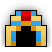
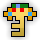
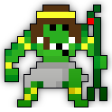
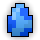
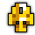
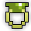
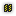
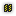

| Last updated: Exalt Version 6.1.0.0 (Sep 2025) |
|---|
|  |
| Dust Drops | ||
|---|---|---|
| 44-54 |
54-62 |
0 |
The Tomb of the Ancients is an high-level dungeon that drops the entire Priest of Geb ST Set and five untiered items.
The portal to the Tomb of the Ancients has a chance to drop from Ghoul and Animate Sigillaria. It is also guaranteed to drop from The Lich King, Legion General and Grand Sphinx.
The Tomb is a source of the rare Potions of Life, powerful untiered rings, the Tome of Holy Protection, the Pharaoh’s Requiem, it is also home of the artifact known as Ascension Ankh, and the entire Priest of Geb ST Set. The dungeon has several hazards, including indestructible turrets that cause various status effects, quicksand that slows movement the longer players are in it, powerful enemies, and a boss fight against three enemies at once.
This dungeon must be completed to earn ‘Tunnel Rat‘, ‘Conqueror of the Realm‘, ‘Hero of the Nexus’ and ‘Realm of the Mad God’ fame bonuses.
| The Realm Eye says: |
|---|

The final resting place of the old gods is considered by archaeologists to be a time capsule of ancient culture. However, research is limited due to the infestation of cursed monsters. They were brought to life through forgotten necromancy and designed as guardians of the tombs. Generations of mortals have survived in the catacombs as well, perpetually carrying out ceremonies to prevent the awakening of the old gods. |
 The Tomb of the Ancients Key is available in the Nexus for 200  .
.
See the Tomb of the Ancients Guide for a complete walkthrough on the dungeon and all its enemies.
The dungeon consists primarily of rectangular rooms linked by short, narrow hallways. Treasure Rooms are circular instead. The floor tiles consist of tan sandstone tiles or hardened sand, with streaks of quicksand extending throughout the dungeon. The treasure room has golden floor tiles instead. The walls consist of slanted sandstone tiles with hieroglyphics.
Players will enter the Tomb in the boss room. However, the bosses are inactive and invulnerable until 3 Sarcophagi are defeated. The Sarcophagi are scattered throughout the Tomb. Each tomb has 5 “event” rooms containing either a Sarcophagus protected by Worshipping Priests and Worshipping Priestesses a or “treasure room” with a Treasure Sarcophagus with a minimum of 1 sarcophagus in each tomb. A room in a dead end will always be an event room, but an event room does not necessarily need to be a dead end.
Once three Sarcophagi are destroyed, the Bosses will become active. Treasure Sarcophagi do not need to be destroyed to activate the bosses. For example, if there were 2 Sarcophagi destroyed and the tomb bosses have activated, then the 3 remaining Sarcophagi are actually Treasure Sarcophagi.
Frequently found between Sarcophagi chambers, along with the turrets. Up to 8 traps can appear in a room, laid out in a circle pattern. It tosses grenades endlessly, but does not aim at players.
Each grenade deals 120 damage and it fires every 1.5 seconds.
Switches are found in the center of room filled with traps. Standing on it for 3 seconds will turn off all the Bomb Traps in the room.
Various elemental turrets are found in most rooms. These cannot be destroyed but can still be temporarily disabled by stuns and stasising. Their projectiles cause moderate damage but inflict dangerous status effects.
Quicksand “rivers” extend throughout the dungeon and form a square “moat” in the boss room. Quicksand slows players more the longer they stand or move in it. Hallways will not have quicksand.
| Item | Drops From |
|---|---|
 |
 Geb |
|  | |
     |
|
      |
|
 |
|
 |
Nut |
 |
Geb |
 |
|
 |
Nut |
 |
Geb |
 |
|
 |
Geb, |
 |
Nut, |
 |
|
 |
Worshipping Priest, Worshipping Priestess |
|  | |
  |
|
 |
Nut |
 |
Geb |
Historical Drops |
|
 |
|
   |
|
 |
|
The Tomb of the Ancients is part of the Mighty Quest pool from the Tinkerer and has three associated quests.
| Name | Description | Items Needed | Reward |
|---|---|---|---|
| The Ancients | Defeat Geb in the Tomb of the Ancients. | |
 |
| Long Forgotten | Many forgot about these ancient foes. Aye, but not me! |  |
|
| Lost and Found | People say some things are best left forgotten. I heartily disagree! |    |
Unlike most bosses, the bosses of the tomb are not immune to debuffs like  Slowed,  Paralyzed, and even Stasis. Classes with the ability to inflict these effects, primarily Archer, Huntress, and Mystic respectively, but others as well with the right UTs, can control the battle and greatly reduce the danger.
Slowed,  Paralyzed, and even Stasis. Classes with the ability to inflict these effects, primarily Archer, Huntress, and Mystic respectively, but others as well with the right UTs, can control the battle and greatly reduce the danger.
Fast Clear - the fastest way to clear the Tomb is to have a Rogue run-and-cloak to bypass all the intermediate rooms between the Sarcophagi. This allows the remainder of the group to teleport to the quests. This strategy will also involve leaving at least one person near the dungeon entrance, allowing the group to quickly engage the bosses after the last Sarcophagus is killed. The beauty of this strategy is it can be accomplished with very small groups, avoiding an otherwise epic amount of time wasted on lesser minions.
Most often, people call for a style of Tombing collectively referred to as Clean; Its opposite is often called FFA (Free-For-All. As its name suggests, bullets fly, people die, and the Mad God smiles upon thee). The fundamental principle of Clean is to preserve the lives of the players. To proceed in the Tomb safely, one boss is often attacked at a time, as the bosses only begin to attack upon receiving a set amount of damage. In other words, unless provoked, they will simply stand around. The most popular method (for fighting bosses is) Bes, Nut, and Geb, in that order. When the Tombs were new, Nut was the primary target, due to her status as the healer. Geb is seldom attacked first, except in FFA.
Tips to keep in mind when first attempting a tomb in a large group or in a small group:
The easiest way to complete this dungeon, with a large group, is to sit back until a designated rusher reaches the sarcophagus rooms. When they reach the rooms, the kind thing to do is to help them clear the sarcophagi and teleport back to the main room and wait for the next room. Repeat this until all rooms are cleared.
The chances of the all bosses being activated is large, but if possible try and keep the tomb “clean” (staying in the designated attack order).
A small group is generally preferred by more experienced players, but this can be quite a challenge for beginning players. The best way is to let a rushing player do their job, but in smaller groups this isn’t always possible. If there is still a chance that the bosses can be cleared, clear the dungeon of monsters as you go sarcophagi to sarcophagi.
In a tomb, with a small group, it is critical to not fight all bosses at once. In a smaller group this is multiplied. Fighting the bosses out of order can result in death.
Remember, these bosses can do serious damage and take all precautions possible! (especially on melee classes). The first thing to think about is risk over gain.
There’s the rare possibility for the dungeon to have only one Sarcophagi and four Treasure Sarcophagi.
The Tomb of the Ancients was added to the game in Build 120 (Nov 2011), with the new realm event: Grand Sphinx.
A guild Tomb speedrun contest was hosted in January 2020, and the top guild (Black Bullet) received the exclusive Jade Beetle accessory as an award.
In Exalt Version 4.2.1.0 (Apr 2024), Quicksand was removed from the hallways. This made completing the dungeon safer as the quicksand in the tight spaces made players easy targets for enemies and prone to getting swarmed.
As of Exalt Version 4.2.3.0 (June 2024), Tombs now require destroying three Sarcophagi to activate the bosses instead of all of them, Sarcophagi now have a chance to drop potions of life, and Treasure Sarcophagi can now drop greater stat potions.
Before Exalt Version 5.11.0.0 (May 2025), dungeon completion gave 74-173  with 60% chance and 23-53
with 60% chance and 23-53  with 50% chance.
with 50% chance.
Before Exalt Version 5.12.0.0 (June 2025), dungeon completion gave 40-50  and 42-50
and 42-50  .
.


{kind=link}